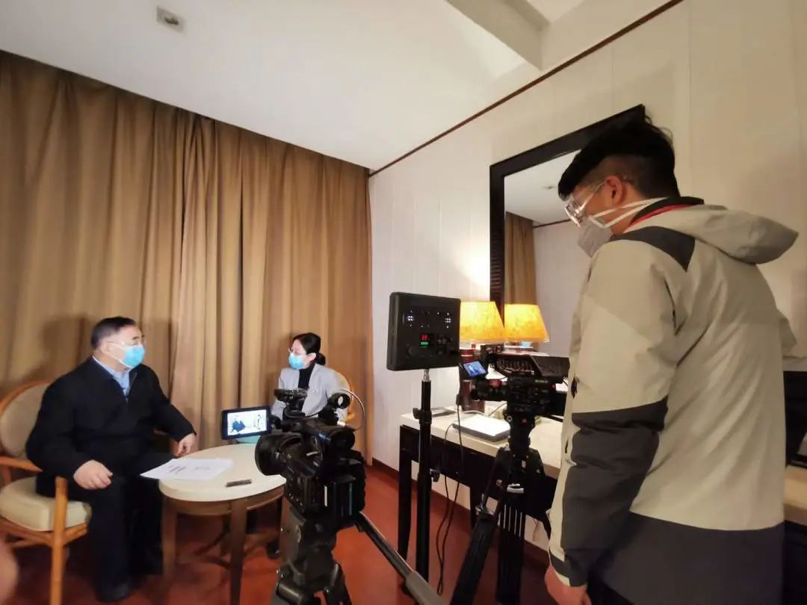

特写|两家公立医院新冠感染溯源 北京救治专家细解防控难题
原文链接 备份链接 【财新网】（记者 赵宁 实习记者 曾美雅）北京大学人民医院一名住院病人感染新冠肺炎的消息传出后，北京疫情防控备受关注。国家主席习近平在2月23日的讲话中，更是将“全力做好北京疫情防控工作”作为了七项重点工作之一。由于医 …
人民日报客户端

本文图均为 人民日报 图
人民日报客户端3月5日消息，3月3日，中央指导组专家组成员、中国工程院院士、天津中医药大学校长张伯礼，在武汉接受了人民日报新媒体的专访。
疫情防控形势接下来会如何发展？大家什么时候才能“摘口罩”？新冠病毒会不会常态化，变成慢性病？看这位已在抗“疫”一线奋战一个多月的老兵怎么说。
新增病例到什么时候才能“清零”？
张伯礼：我们分析了疫情演变数据，目前来看，全国除湖北以外其他地区，2月底新增病例基本“清零”；
湖北省除武汉市以外其他地区，3月中旬估计能基本“清零”；
武汉市有希望到3月底实现基本“清零”。
从疫情整体发展趋势看，是这样的。但是，“清零”也不是绝对的，偶尔还是会出现几个新增病例。
什么时候才能“摘口罩”？
张伯礼：估计4月底除了湖北以外，全国其他省市基本就可以摘口罩恢复正常生活生产秩序。湖北省特别是武汉市，可能要比全国晚1个月左右。但是，我不主张那么着急摘口罩，即使复工复产，恢复正常秩序了，口罩还是慢一点摘比较好。就算全国都“清零”了，少聚集、勤洗手、戴口罩的好习惯，也要保持一段时间。毕竟，现在疫情下半场国外的形势还是很严峻，要防范输入性病例。
我希望，大家不要把注意力过多地放在什么时间摘口罩这个问题上，养成良好的生活习惯才是最重要的。

在武汉一个多月，都干了哪些事？
张伯礼：1月27日我刚到武汉的时候，形势非常严峻、复杂：患者和非患者混在一起，发热的、留观的、密接的、疑似的，这“四类人”很多都没有被隔离，非常混乱。大医院被挤爆，排队几小时看不上病，确诊病例也住不了院，一床难求……
当时我们就向中央指导组提出，分层分类管理，集中隔离，分别处理。同时，对于确诊患者也要分类管理，轻症、重症分开治疗，可以占用学校、酒店，这样可以有效地利用有限的卫生资源。但是，当时很多患者因为没有确诊，就没有得到有效的救治，只是被简单隔离了，情绪恐慌、救治无助。当时我们根据以往经验就建议，对“四类人员”全部给中药，因为无论是对于普通感冒、流感，还是新冠肺炎，中药都是有一定疗效的。先吃上药稳住情绪，一二天退热了，就有信心了。
之后，随着确诊患者越来越多，一床难求，解决不了应收尽收的问题，专家建议建立方舱医院收治轻症患者。我和刘清泉教授写了请战书，提出中医药进方舱，中医承办方舱医院。中央指导组同意后，我们就组建了第一支中医医疗队，由天津、江苏、河南、湖南、陕西的209位中医专家，筹建了江夏方舱医院，里面主要采用中医药综合治疗。取得经验后，现在所有的方舱医院几乎都在使用中药了。
目前，工作重点放在了对重症患者的救治上，中央指导组下达指示，组建中西医联合会诊组，对武汉市的重症病人进行一对一会诊，建立一对一包括中医药的诊治方案。经过几轮会诊，目前看还是有效果的，武汉患者死亡人数在逐步下降，从百位降到几十了。
现在，我们又在考虑恢复期的病人。一些出院的病人特别是重症患者康复问题。有的出院了，但还有症状，咳嗽、喘憋、心悸、乏力等；有些肺部感染渗出吸收不完全，有的免疫功能紊乱等。我们就在湖北省中西医结合医院、武汉市中医院建立了新冠患者康复门诊，专门管理治疗这部分病人。在中国工程院和有关单位支持下，我们还组织了武汉协和医院、武汉市中医院共同建立湖北感染新冠的医务人员康复管理平台，这将是今后一两年的任务。
如何看待此次疫情中，关于中西医孰强的争论？
张伯礼：在这场战“疫”中，中医和西医是非常和谐的。特别是在重症病人的抢救过程中，以西医为主，中医为辅，但是有时辅助也起关键作用，已经有很多例子了。医疗队里的中医西医不分你我，谁有办法谁上，能够挽救病人的生命，这才是我们共同的目的。
在疫情如此严重的时候，往往是局外人还在争论中西医到底谁强谁弱，谁优谁劣，既无聊又无意义。中医西医各有长处，优势互补，人命大于天，能救命才是最重要的。
江夏方舱医院整体救治情况如何？
张伯礼：截至目前，江夏方舱医院累计收治了五百多位患者，主要是以轻症为主，占七八成吧。其中，已经出院二百多位患者了。还有一百多位患者最近陆续也要出院了。
最让人欣慰的是，江夏方舱医院目前收治的所有患者中，没有一个转为重症的，医护人员也是零感染。
现在，被感染医护人员的救治情况如何？
张伯礼：医护人员被感染，大部分是发生在一月份。当时病人高度集中，秩序混乱，医护人员满负荷、高强度工作，防护物资也不够。
现在防护措施、物资都跟上了，一线医护人员的工作负荷也减轻了，被感染的情况就很少了。
目前，被感染的医护人员大部分已经治愈出院，还有一部分仍在救治。我们还将为被感染的医务人员建立一个健康管理平台，在未来一到两年，追踪他们的健康状态，以中西医结合的干预方式，帮助他们更好康复。我们希望能为被感染的医护人员提供必要的帮助，以回报他们的付出和牺牲。
新冠病毒会不会常态化，变成慢性病？
张伯礼：新冠病毒到底会不会常态化，目前还不好说，需要继续加强流调和基础研究，毕竟目前我们对它的了解有限。
但是，冠状病毒对于人类社会的影响绝不会就此终止。自上世纪六十年代发现它以来，大多数时间都比较温和，但近二十年它几次变异都形成了大规模疫情，损失巨大。所以，我主张要持续研究冠状病毒感染的机制，研发广谱抗冠状病毒的药，以不变应万变。现在我们也正在抓紧时间做这件事。
跟SARS相比，新冠肺炎的治疗难度在哪里？
张伯礼：跟SARS相比，新冠病毒更“狡猾”、更“多变”、也更让人“猜不透”。
发病初期，病情看上去并不是很重，但是到了一定阶段，就会急转直下。新冠病毒传播性比SARS更强，发病人数、死亡人数也比SARS多得多。而且，患者治愈后会出现“反复”，有一定比例的患者出院以后又“复阳”了。重症患者康复问题也较SARS复杂。
但我们还是要有信心，毕竟出院后“复阳”的患者是少数。而且，“复阳”患者的治疗也相对容易，基本治疗几天后就会“转阴”。康复也将是今后研究的重点问题。
这次疫情，我们应该吸取哪些教训？
张伯礼：首先，要强化源头治理。要杜绝一切野生动物的市场交易，严禁食用陆生的野生动物。这次疫情教训太深刻了，我们一定吸取教训，不能像当初SARS一样，转头就忘了。
其次，现有《中华人民共和国传染病防治法》也需修订。这次疫情暴露出一个很大的问题，疫情出现了，谁来报？报给谁？现在机制不顺，层层上报、层层审核、层层淡化，到中央都衰减变味儿了，影响中央决策。回过头来看，新冠肺炎在去年12月底、1月初人传人的现象已经很明显了。那时还说是“有限人传人”、“局势可控”，就有问题了，丧失了防控最佳时机。
再就是，基层社区的卫生能力明显不足。那么多人，一发热就往大医院跑，如果社区的医疗卫生设施足够强，发挥“拦阻干预”作用，疫情可能会在早期得到有效控制，强基层要真正落地。
另外，检测权限集中、试剂盒短缺严重影响了确诊救治，防控物资明显短缺、调配机制滞后、应急系统响应及运营都需要极大改善。
最后，我想提醒的是，疫情过后也别遗忘了中医药，还是要继续推进中医药事业的发展。在近日中国-世卫组织的疫情考察专家组中没有中医药专家，疫情报告中，中医药几乎没有涉及，这令人十分遗憾。
戳这里进入
“全国新型冠状病毒感染病例实时地图”↓↓↓
本期编辑 周玉华
推荐阅读


原文链接 备份链接 【财新网】（记者 赵宁 实习记者 曾美雅）北京大学人民医院一名住院病人感染新冠肺炎的消息传出后，北京疫情防控备受关注。国家主席习近平在2月23日的讲话中，更是将“全力做好北京疫情防控工作”作为了七项重点工作之一。由于医 …
原文链接 备份链接 有时候半夜突然想到某个可能的漏洞，惊出一身冷汗。 记者 | 黄 祺 抗击新冠肺炎疫情的紧要关头，医院不能失守。 中国疾控中心2月17日的一份研究报告显示，全国已有3019名医务人员感染了新型冠状病毒，其中包括1716 …
原文链接 备份链接 记者：金淼 “ SARS疫情爆发时，国内医务人员感染 996例，占所有临床诊断病例的18.8%。 ” 2月18日上午10点30分，经全力抢救无效，武汉武昌医院院长刘智明因感染新冠肺炎在同济医院中法新城院区去世。刘智明是 …
原文链接 备份链接 图片来源：pexels 记者：肖恩 “ 韩国新增的3例病例感染路径不明。韩国卫生部门认为，从国内外疫情来看，新冠肺炎疫情已经进入新局面。 ” 就在日本正为国内新型冠状病毒肺炎疫情的严峻形势忧心的同时，邻国韩国也在为抗疫 …
原文链接 备份链接 图片来源：共同社 记者：田思奇 编辑：曾宇 “ 多位日本专家学者一直呼吁，比防控边境以减少病毒输入更迫切的，是尽早为不可避免的国内疫情扩散做好防治和医疗准备。 ” 1月底，和田耕治希望日本在奥运会前有足够的时间来防御新 …